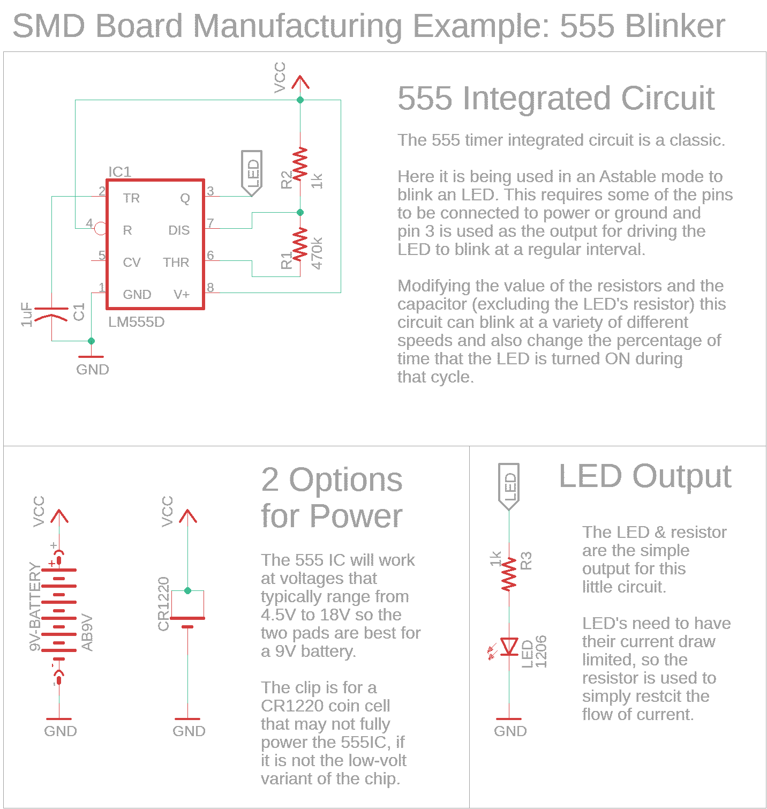

Arduino Learning Boards!
Designed by Corey Rice (7/2020) for 'Foundations of Fabrication' at MakeHaven in New Haven, CT, USA covered by GPL-3.0 License.
I hope you enjoy these boards. They were designed to provide practice soldering, milling, and working with some of the available inputs and outputs on an Arduino.
Double Sided Boards - order from Fab House
The double sided boards give exposure to more type of inputs and outputs. They are also (probably) much easier as a first timer's exploration of soldering. Finally, since the board can be double-sided, several more components are able to be integrated for exploration.
A couple common printed circuit board fabrication companies (Fab House's) are jlcpcb.com and pcbway.com. You will upload the zipped gerber files to their website, and be able to adjust the settings of the boards before you order. [The default ordering options are fine, if you are unsure about the choices. However, upgrades to ROHS (reduction of hazardous substances) and lead-free are always good choices.] Typically, your first order will have a promo for free shipping.

Single Sided Boards - make in local Fab Lab
{kind=link}
The single sided boards offer a chance to practice milling a circuit board on your own! They also give a chance to start soldering surface mount components in the generous 1206 size. Fewer components fit, but choosing this path probably implies you know a thing or two about the basic components that can go with an Arduino easily.
Some sort of CNC will be necessary to cut out these circuit boards - typically a tabletop size mill with high step accuracy. The files included for production are simple images at 1000DPI that can be converted into appropriate gcode for your local machine using mods, fabmodules.org or however you prep your Gcode. The stock material for milling the circuitboards is typically a single sided FR4 board, which is available for sale from digikey.com, inventables.com and more suppliers. Endmills will also be needed to cut the copper of the board and these are available from many suppliers, such as carbidedepot.com, inventables.com and others.

Single Sided 555 Timer Boards - make in local Fab Lab without Drilling
{kind=link}
The single sided boards offer a chance to practice making circuits with the laser and a chemical echant! They also give a chance to start soldering surface mount components in the generous 1206 size. The 555 timer is a classic that doesn't need programming, so you can just focus on making the board and soldering.
The "Files for Production" linked above are actually a single SVG file, that is intended to be used with a laser cutter. You'll need to get some single-sided copper FR4 board to make these circuits. First, you'll want to cover the copper with some ort of resist layer. We reccomend a thin (but complete) layer of spray paint. The laser can then vector engrave the lines of the SVG to remove some of the spraypaint resist. Once this copper is exposed, Ferric chloride can be used to chemically remove it, and thus define the traces and pads of the circuit. Then thoroughly clean the board and gently sand off the spraypaint. At this point, you should have a fully formed circuit board and be able to solder on the components.
